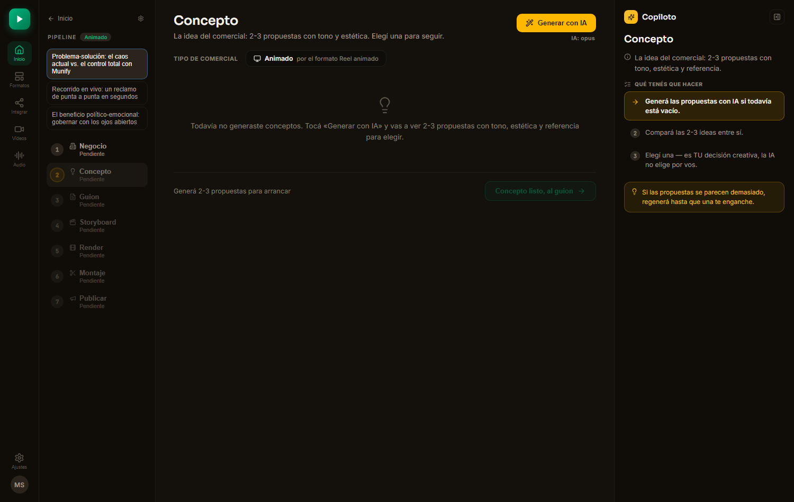
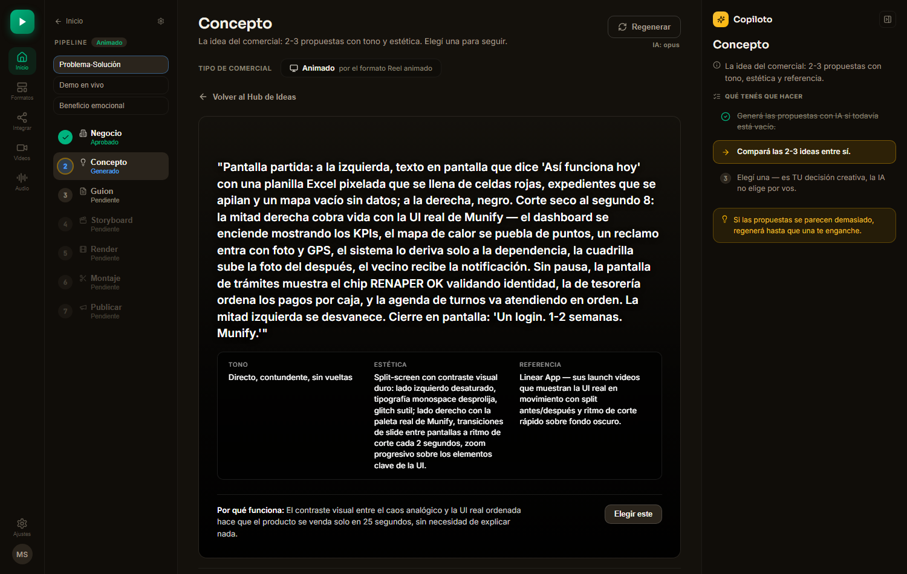
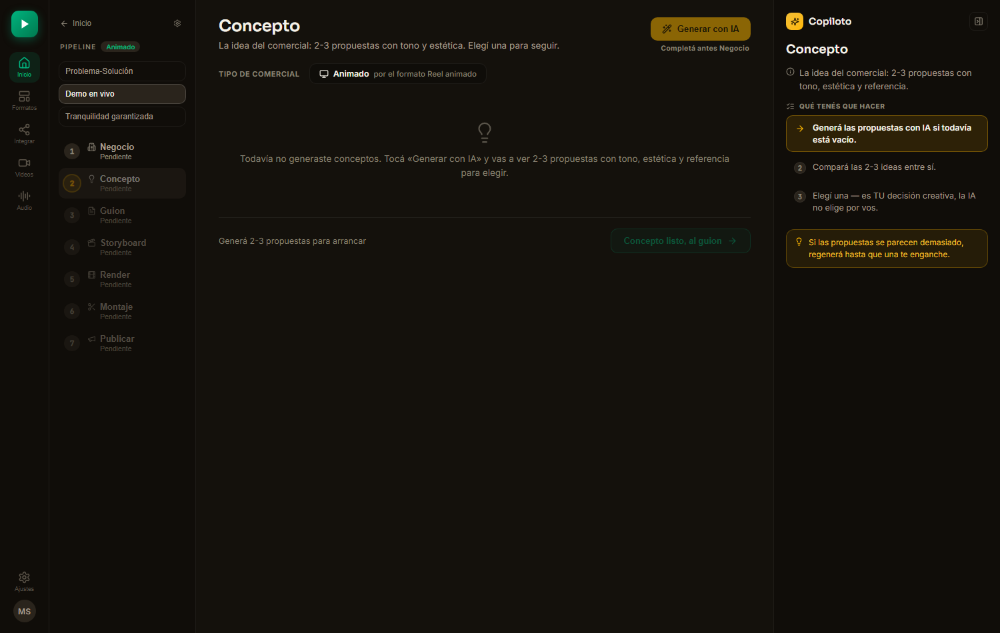
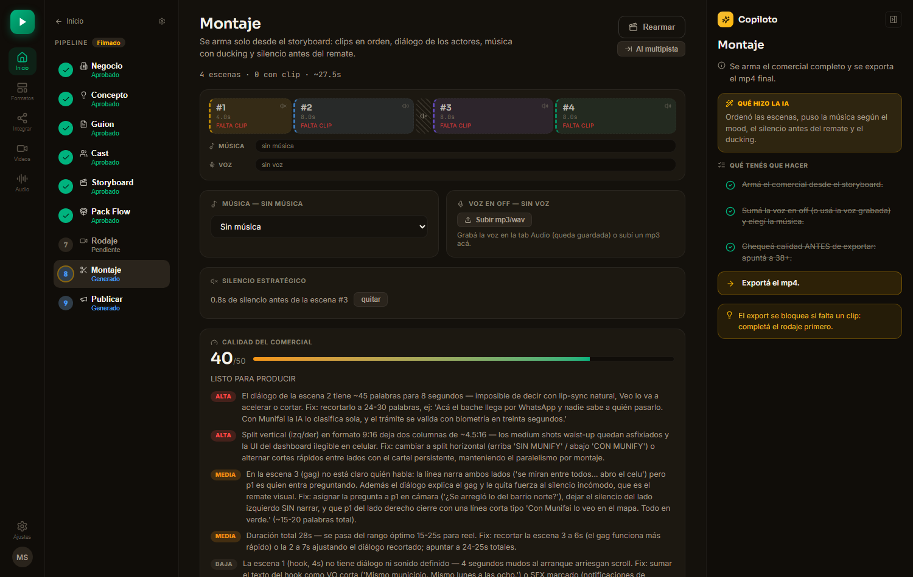
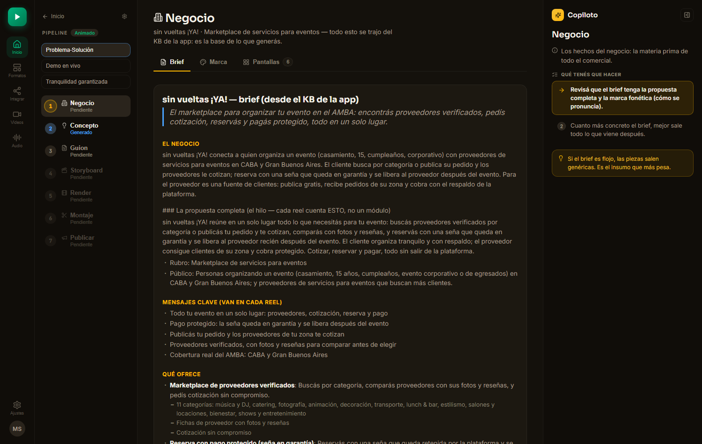
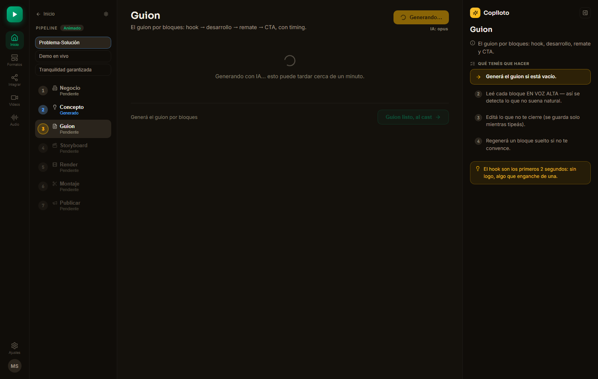
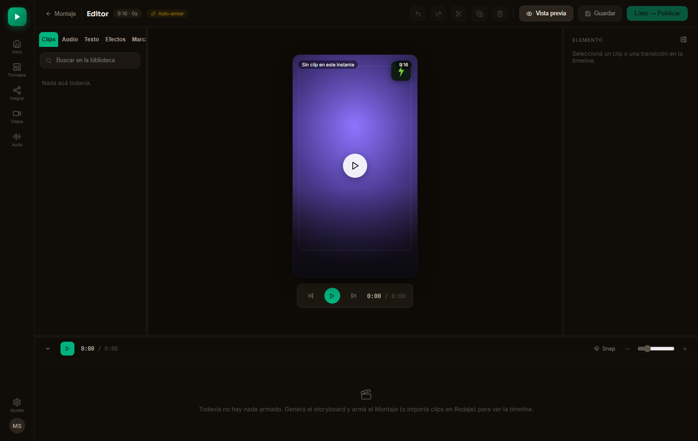

tsc 0 errores · eslint 0 errores (12 warnings preexistentes, sin crecer) · vitest verde · 0 errores de consola en vivomunify-ejemplo intacto (solo leído para probar el gate).localhost:5180 con Playwright, que cazó 7 hallazgos nuevos que la lectura de código no había visto → tercera tanda para cerrarlos → re-verificación 8/8. La curaduría se cierra cuando el comportamiento en vivo coincide con lo que el código dice que hace, no antes.| Antes | Después |
|---|---|
| Chips Filmado / Animado editables siempre, sin mirar el formato de la pieza. | Si la pieza tiene formatoId: label fijo ("Animado por el formato Reel animado"), no hay nada que elegir mal. Los chips solo aparecen para piezas viejas sin formato (retrocompat). |
El molde concept era ciego a la técnica: mismo prompt para filmado y animado. | El molde bifurca por tipo: animado pide motion graphics sobre pantallas/UI reales del producto (inyectadas), prohíbe actores y locaciones explícitamente en el prompt. |
| — | Sin formatoId (piezas viejas): comportamiento byte-idéntico a antes. 3 tests nuevos cubren la bifurcación. |

0d0f014.
| # | Inconsistencia | Impacto |
|---|---|---|
| 1 | El formato solo entra por 1 de las 3 puertas: el wizard lo pide, pero KbInspector y KbFromText crean proyectos sin formatoId. | Toda pieza creada por esas 2 puertas nace 'filmado' por defecto, sin que el usuario lo haya elegido. |
| 2 | pasoHabilitado existía y estaba testeado, pero nadie lo usaba: el spine dejaba clickear cualquier paso y "Generar con IA" corría sin insumos previos. | Se podía quemar una llamada de IA y marcar un paso como "generado" con datos incompletos o inconsistentes. |
| 3 | Publicar y Negocio nunca llegaban al estado 'aprobado' — no había botón para marcarlos. | Home mentía: el stat "Publicadas" quedaba clavado en 0 y la barra de progreso topeaba antes del 100%, aunque el trabajo estuviera terminado. |
| 4 | El molde cast hardcodeaba 9:16, publish siempre asumía Instagram, la duración del guion era 20s fijo sin mirar el formato. | Una pieza 16:9 para YouTube salía con datos de casting/publicación/duración de un reel de Instagram. |
| 5 | El copiloto pedía "Definí Filmado o Animado" siempre (aunque ya estuviera definido por el formato); Montaje hablaba del "Rodaje" en piezas animadas (que no tienen rodaje); 2 engranajes de ajustes desincronizados; el editor guardaba "en falso" sin pieza asociada; la pill "Combinado" en Home no servía para nada; 9 archivos sin ningún import (código muerto). | Copy incoherente con el estado real + una fuente de ajustes que no reflejaba la otra. |
7d6053f (front) y f59b826 (moldes). +15 tests (381/387 en ese punto).| Qué se cableó | Detalle |
|---|---|
| Gate del spine | pasoHabilitado ahora se usa: pasos sin insumos quedan disabled con tooltip explicando qué falta. |
| Auto-generar condicionado | "Generar con IA" ya no corre sin insumos previos. quedó en WIP — parcial, por tocar líneas de otra sesión en simultáneo. |
| Publicar y Negocio aprobables | CTA nuevo ("Marcar publicada" en Publicar; equivalente en Negocio) que sí llega a 'aprobado' — Home deja de mentir el progreso. |
| Cast, publicación y duración reales | Cast usa el aspecto del formato (no 9:16 fijo); la red de publicación se deriva de la plataforma del formato (bifurca YouTube/TikTok/Meta/TV); la duración sale de formato.default (o 20s solo si no hay formato). |
| Copys y engranajes | Molde script suma bloque animado según tipo; copy de Montaje bifurcado (ya no dice "Rodaje" en piezas animadas); copiloto condicionado a formatoId; Pipeline.tsx dejó de crear comerciales 'filmado' fijo (usa tipoDesdeFormato); el engranaje del pipeline pasó a useSyncExternalStore (una sola fuente); el editor dejó de guardar en falso sin pieza asociada. |
localhost:5180 7 hallazgos nuevos| # | Hallazgo | Severidad |
|---|---|---|
| H1 | El aterrizaje al abrir un proyecto era fijo en 'concepto' — esquivaba el gate: el botón Generar aparecía vivo en un paso que en teoría estaba cerrado. | alta |
| H2 | El gate encerraba trabajo ya hecho: el Montaje de munify-ejemplo, con exports mp4 reales, quedó inaccesible por el mismo gate pensado para bloquear pasos vacíos. | alta |
| H3 | Navegar el spine reescribía el proyecto: cada click disparaba un POST y movía updated_at aunque no hubiera nada que guardar. | media |
| H4 | La persistencia mezcla campos desde localStorage de forma frágil. | media — pendiente |
| H5 | El panel quedaba en blanco ~50s durante la generación de IA, sin ningún indicio de que estaba trabajando. | media |
| H6 | Botones disabled del editor parecían vivos (mismo estilo que los habilitados) + el chip "Guardado" aparecía aunque no hubiera nada guardado. | media |
| H7 | Los moodboards apuntan a image.pollinations.ai, un servicio externo. | baja — pendiente, decisión del dueño |
3e3489b (H1+H2+H3), aa8104c (H5), 8c244e4 (H6). Re-verificación en vivo: 8/8 pasa.| Hallazgo | Fix |
|---|---|
| H1 — aterrizaje esquivaba el gate | pasoDeEntrada() nuevo: aterriza en el primer paso habilitado y no aprobado, no en 'concepto' fijo. |
| H2 — gate encerraba trabajo hecho | pasoHabilitado ahora abre pasos con contenido propio (estado >= generado), no solo los "siguientes en la fila". El Montaje viejo de munify-ejemplo vuelve a ser accesible. |
| H3 — navegación reescribía el proyecto | La navegación solo dispara guardado si hay cambios pendientes reales — 0 POST por simple click entre pasos. |
| H5 — panel en blanco durante la IA | Spinner "Generando con IA…" visible en el cuerpo del panel (PasoShell), no más pantalla muda. |
| H6 — botones mentían su estado | PasoGate por contexto cierra "Generar" con el mismo copy del tooltip del spine; toolbar del editor con disabled coherente (ya no parece clickeable lo que no lo es). |


munify-ejemplo (exports mp4 reales, escenas con música y silencio estratégico) vuelve a abrirse: el gate ya no encierra lo que ya está producido.
pasoDeEntrada() lleva al primer paso habilitado y no aprobado (Negocio), no al 'concepto' fijo de antes.

munify-ejemplo solo se leyó para probar el gate, nunca se escribió.formatoId (viejas): mismo comportamiento de siempre en Concepto, cast, publish y duración.KbInspector y KbFromText siguen creando proyectos sin formatoId — ¿un selector propio en cada una, o rutear ambas al wizard?useSyncExternalStore, pero conviene borrar directamente el duplicado y dejar una sola fuente.localStorage: mezcla de campos que conviene endurecer.pollinations.ai: servicio externo; decidir si se mantiene, se reemplaza o se documenta como dependencia aceptada.PasoShell (Render, Rodaje, Montaje) no consumen el gate por contexto — hoy no es alcanzable porque el spine ya filtra antes, pero queda como deuda de diseño; y un paso en estado 'generado' sin artefacto persistido podría auto-disparar IA (caso raro, ligado al WIP ajeno).